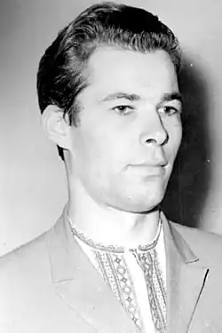

Василь Чухліб народився 19 липня 1941 року в селі Лебедівка Козелецького району на Чернігівщині в сім’ї вчителів. Його дитинство припало на важкі воєнні та повоєнні роки й пройшло в придеснянському селі Соколівка, куди переїхали батьки після війни і де він закінчив семирічку. Десятий клас Василь закінчив у місті Острі. Районна газета "Правда Остерщини" опублікувала перший вірш Василя Чухліба, коли він був ще учнем середньої школи. А по закінченні школи хлопця запросили на роботу до цієї газети. Згодом Василь вступив на мовно-літературний факультет Київського педагогічного інституту. Здобувши диплом викладача мови та літератури, він деякий час працював учителем у місті Добропіллі на Донеччині та в місті Обухові на Київщині.
В 70-ті роки новели В.Чухліба, надруковані в періодиці, привернули увагу редакції журналу "Малятко", і тоді письменникові запропонували виступити з оповіданнями для дітей. Згодом з творів, надрукованих у "Малятку", склалася перша книжечка молодого літератора "Хто встає раніше".
З того часу письменник потішав дітей не однією книжкою: "Безкозирка", "Тарасикова знахідка", "Чи далеко до осені", "Пісня тоненької очеретинки", "Пілотка лісових горіхів", "Жарини на снігу", "Лелеки над татовим полем" та інші. Більшість його коротких оповідань та казок – про природу. Представників природного світу автор наділяє тими рисами, характером та поведінкою, які властиві добрим та лихим людям. Його герої живуть у дружбі і злагоді з деревами, травами, ріками, з домашніми і дикими тваринами, відчувають красу навколишнього світу і бережуть її. Василь Чухліб – лауреат літературної премії імені Лесі Українки 1996 року за збірки оповідань і казок "Олень на тому березі" (1987), "Куди летить рибалочка" (1991) та "Колискова для ведмедів" (1995). Помер після важкої хвороби 20 листопада 1997 року та похований на батьківщині, в с. Соколівка.